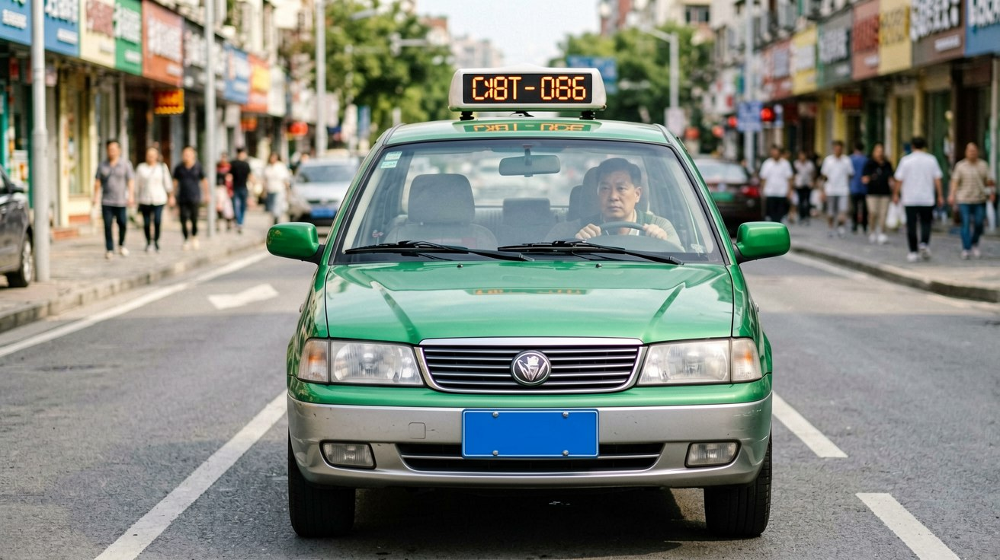

Last updated: June 2026.
Getting around Chinese cities is surprisingly cheap and easy — if you know which apps to use and how to set them up. The days of flagging down taxis on the street and negotiating fares are largely over. Today, ride-hailing dominates, and you can access it directly through apps you may already have on your phone. This guide covers every option: Didi, hailing through Alipay and Amap, traditional taxis, and the crucial question of how to pay.
Didi is the dominant ride-hailing platform in China, operating in over 400 cities. The good news: Didi has an English-language interface, accepts foreign phone numbers for registration, and supports foreign card payments through Alipay and WeChat Pay. You do not need a Chinese phone number or a Chinese bank account.
To set up Didi, download the DiDi Rider app — not the Chinese-language "DiDi Chuxing" version. During registration, select your country code and enter your foreign phone number. You will receive a verification code via SMS. After verification, link a payment method: Alipay or WeChat Pay, both of which accept your foreign bank card. Once set up, the app works exactly like Uber: enter your destination, see the fare estimate, confirm, and wait for a driver to accept.
Didi offers several service levels. Express is the standard and cheapest. Premier uses higher-end cars. Taxi hails a metered taxi through the app rather than a private car — the fare is calculated by the meter, and you can pay through the app or in cash. Didi also offers English customer support through the app's help centre, accessible under "Profile → Help → Customer Service." If a driver calls you and you do not speak Chinese, the app includes an in-chat translation function — type your message in English, and the driver sees it in Chinese.
One practical note: Didi requires your phone to have a working internet connection when hailing and during the ride. If you are relying on hotel Wi-Fi, hail the car before you leave the lobby. If you are on the street, you need mobile data — an eSIM or local SIM activated before you go out.
If you prefer not to download another app, you can hail rides directly through apps you already use. Alipay has Didi integrated into its app. Open Alipay, tap the "Transport" or "DiDi" icon on the home screen, and the ride-hailing interface loads inside Alipay. The experience is nearly identical to the standalone Didi app, and payment goes through Alipay directly — no additional setup needed.
Amap (高德地图, Gāodé Dìtú) is China's most widely used mapping app, and it includes a comprehensive ride-hailing function that aggregates multiple services. When you search for a destination in Amap, the route results include ride-hailing options from Didi and several other local platforms, with fare comparisons. This aggregated approach often finds a cheaper ride than Didi alone. However, Amap's interface is Chinese-only. If you are comfortable navigating a Chinese app with the help of a translation tool, Amap's ride-hailing is the most cost-effective option. If you are not, stick with Didi.
Alipay's ride-hailing integration is the sweet spot: English-friendly enough to navigate, and you are already logged in and set up to pay. From inside Alipay, search for "DiDi" in the search bar and open the mini-program.
Traditional taxis still have a role, especially in scenarios where ride-hailing is inconvenient: at airport taxi ranks, during heavy rain when ride-hailing surge pricing is extreme, or in smaller cities where Didi coverage is thin. Chinese taxis are metered, with fares typically starting at 10 to 14 RMB for the first 3 kilometres and 2 to 3 RMB per additional kilometre.
To hail a taxi, stand at the edge of the road and raise your arm. Look for a green light on the dashboard — it means the taxi is available. A red light means occupied. Some taxis also have a small illuminated sign on the roof that says 空车 (kōngchē) — "empty car." When the taxi stops, get in the back seat and show the driver your destination. The most reliable method is to show the address written in Chinese characters on your phone or on a piece of paper. If you use Amap or Apple Maps, the destination page includes the address in Chinese — show this to the driver.
Payment: most taxis in major cities accept Alipay and WeChat Pay. The driver will point to a QR code displayed on a small screen or stuck to the dashboard. Scan it and pay the metered amount. Cash is also accepted, but drivers rarely carry change — have small bills. Tipping is not expected or practised in Chinese taxis.
One frustration to be aware of: at some airports and major train stations, taxi drivers may refuse short trips because they have waited for hours in the queue and want a longer fare. If a driver refuses, do not argue — try the next taxi in line, or use Didi to hail a car that will accept short trips without complaint.

Payment on ride-hailing platforms is straightforward. When you book through Didi, Alipay, or WeChat, the fare is automatically charged to your linked payment method at the end of the ride. You do not need to scan a QR code or handle cash — the app handles everything. For traditional taxis hailed through the Didi app, the metered fare is charged through the app. For taxis hailed on the street, scan the driver's payment QR code.
If a driver cancels on you, Didi refunds any pre-authorised amount within minutes. If you leave something in a car, open the ride history in the app, select the trip, and use the "Contact Driver" or "Lost Item" function. Didi's customer service can also reach the driver for you.
If a dispute arises — the driver took a longer route, the fare seems wrong, or the driver behaved unprofessionally — report it through the app. Didi's dispute resolution system reviews the GPS track of the ride and typically resolves complaints within 24 hours. For problems with a street-hailed taxi, note the taxi's licence plate number and company name (printed on the door and on the receipt) and report it to the local transport authority. In practice, this is difficult without Chinese language skills, so Didi offers stronger protection for you as a foreign user.
This article is based on platform features and fare structures as of June 2026.
Sources
Ride-hailing platform interfaces and fare structures may change. Verify features in the app before your trip.